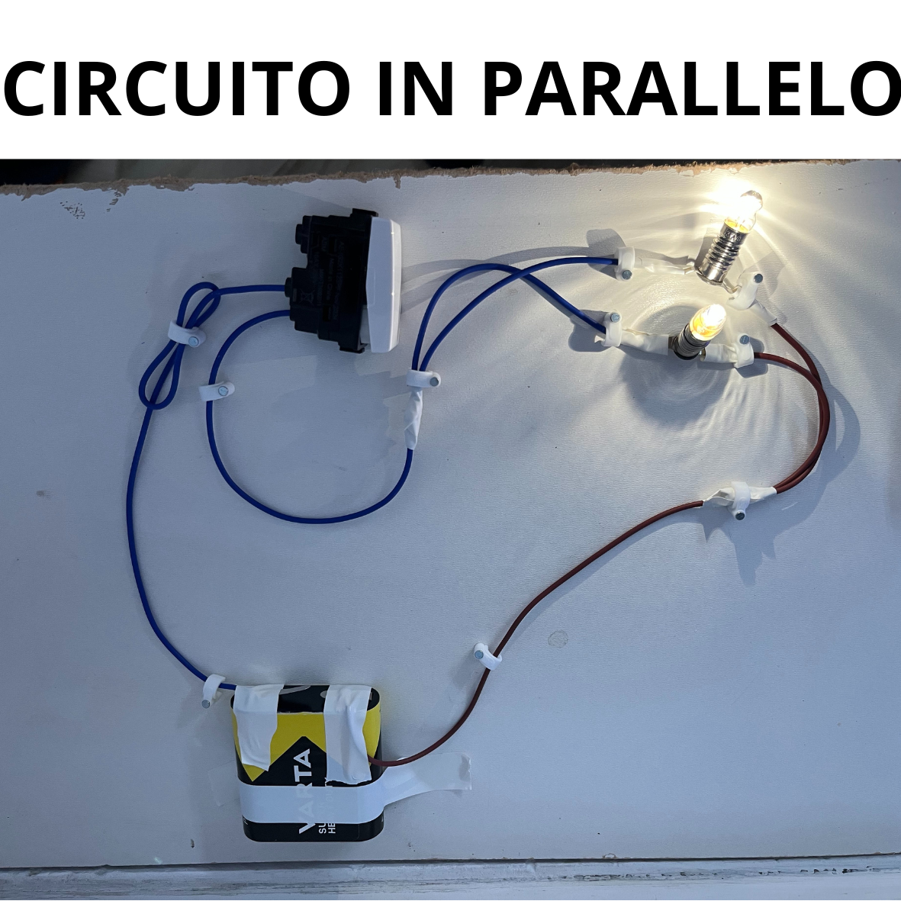
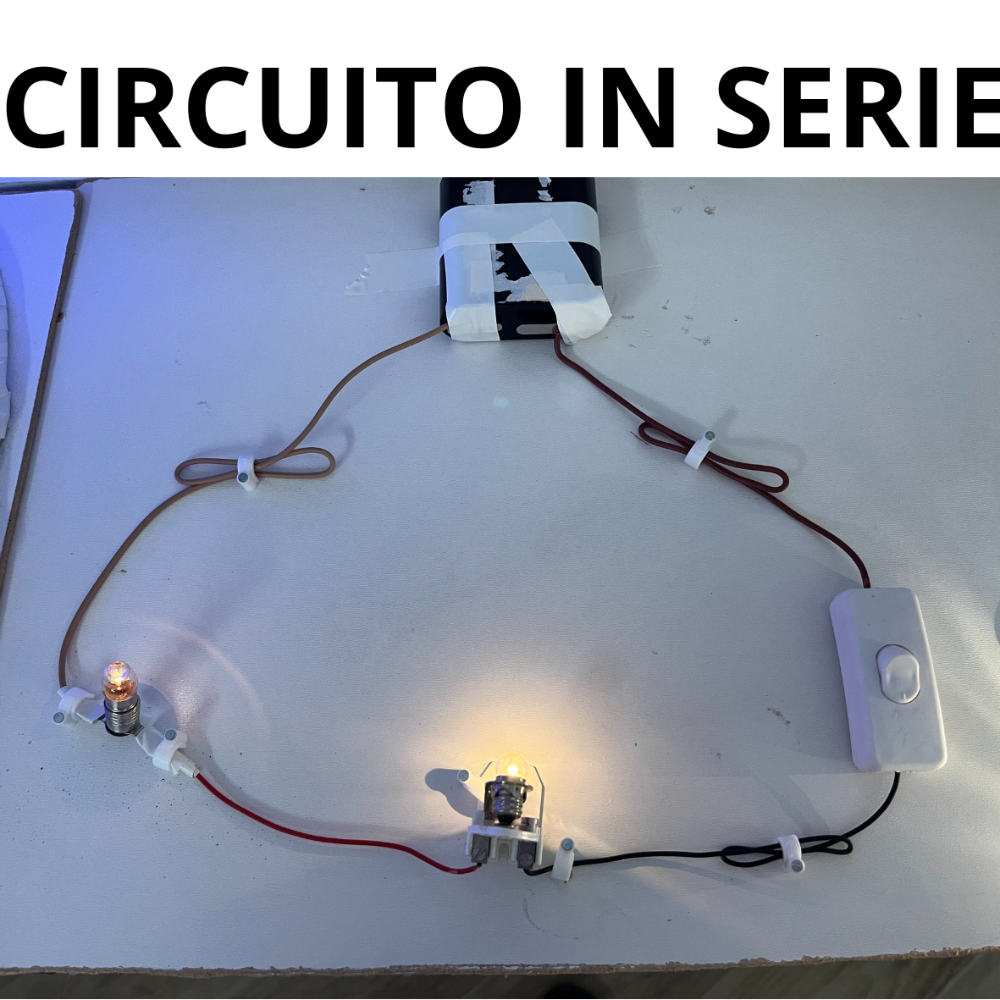
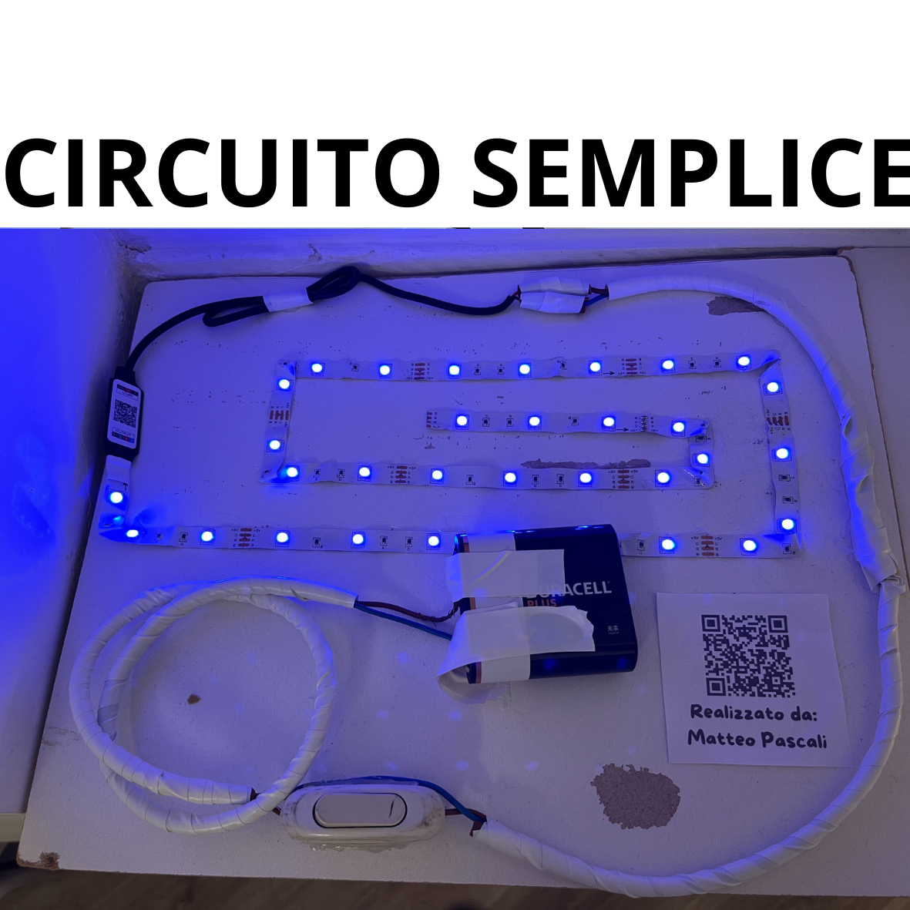

← Vai al Sito Principale
IL MIO PERCORSO FINALE
Presentazione
Canzone AI
Antologia
Circuiti Elettrici
La Mia Tela
Rivoluzioni Ind.
Paesi & Digitale
I Circuiti Elettrici
FATTO DA MATTEO PASCALI
Schema Principale

Circuito in Serie

Circuito in Parallelo
